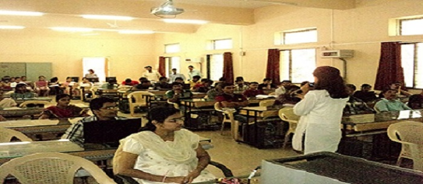
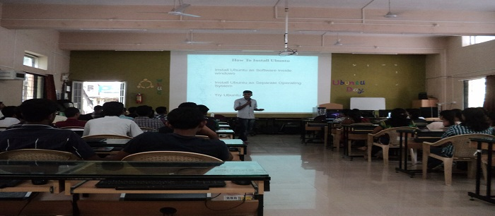
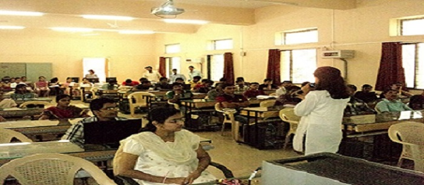
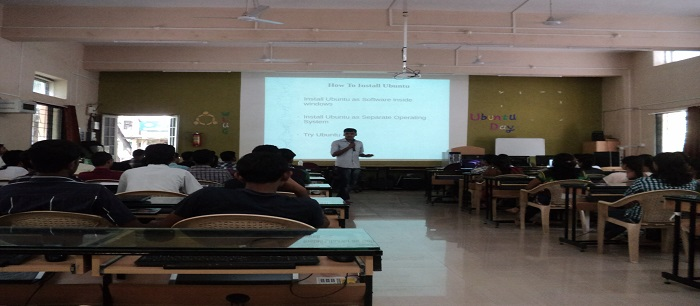
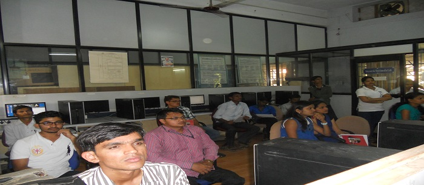
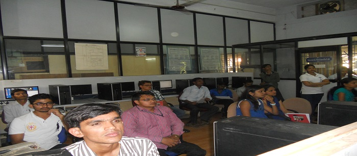
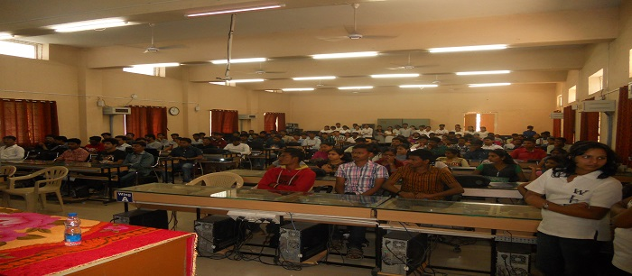
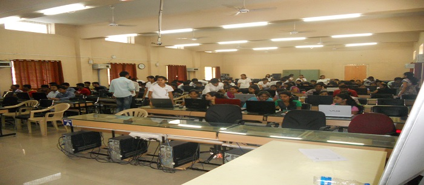
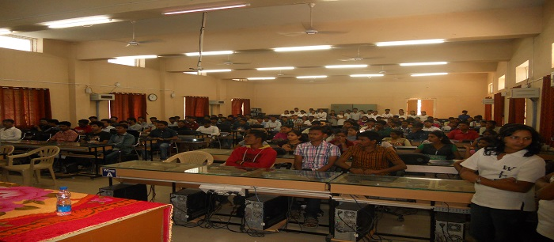
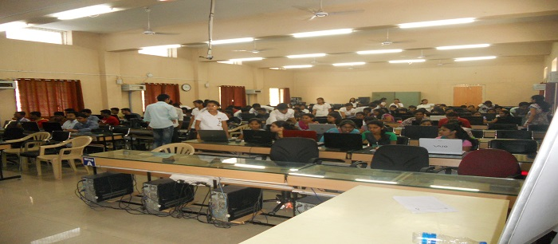

 



 




UNIX License PlateUNIX is an operating system which was first developed in the 1960s, and has been under constant development ever since. By operating system, we mean the suite of programs which make the computer work. It is a stable, multi-user, multi-tasking system for servers, desktops and laptops. UNIX systems also have a graphical user interface (GUI) similar to Microsoft Windows which provides an easy to use environment. However, knowledge of UNIX is required for operations which aren't covered by a graphical program, or for when there is no windows interface available, for example, in a telnet session.
Types of UNIX
There are many different versions of UNIX, although they share common similarities. The most popular varieties of UNIX are Sun Solaris, GNU/Linux, and MacOS X.
The UNIX operating system
The UNIX operating system is made up of three parts; the kernel, the shell and the programs.
The kernel
The kernel of UNIX is the hub of the operating system: it allocates time and memory to programs and handles the filestore and communications in response to system calls.
As an illustration of the way that the shell and the kernel work together, suppose a user types rm myfile (which has the effect of removing the file myfile). The shell searches the filestore for the file containing the program rm, and then requests the kernel, through system calls, to execute the program rm on myfile. When the process rm myfile has finished running, the shell then returns the UNIX prompt % to the user, indicating that it is waiting for further commands.
The shell
The shell acts as an interface between the user and the kernel. When a user logs in, the login program checks the username and password, and then starts another program called the shell. The shell is a command line interpreter (CLI). It interprets the commands the user types in and arranges for them to be carried out. The commands are themselves programs: when they terminate, the shell gives the user another prompt (% on our systems).
The adept user can customise his/her own shell, and users can use different shells on the same machine. Staff and students in the school have the tcsh shell by default.
The tcsh shell has certain features to help the user inputting commands.
Filename Completion - By typing part of the name of a command, filename or directory and pressing the [Tab] key, the tcsh shell will complete the rest of the name automatically. If the shell finds more than one name beginning with those letters you have typed, it will beep, prompting you to type a few more letters before pressing the tab key again.
Everything in UNIX is either a file or a process.
Access rights on files.
r (or -), indicates read permission (or otherwise), that is, the presence or absence of permission to read and copy the file
w (or -), indicates write permission (or otherwise), that is, the permission (or otherwise) to change a file
x (or -), indicates execution permission (or otherwise), that is, the permission to execute a file, where appropriate
Access rights on directories.
r allows users to list files in the directory;
w means that users may delete files from the directory or move files into it;
x means the right to access files in the directory.
This implies that you may read files in the directory provided you have read permission on the individual files.
So, in order to read a file, you must have execute permission on the directory containing that file, and hence on any directory containing that directory as a subdirectory, and so on, up the tree.
There are a number of steps needed to install the software.
1.Locate and download the source code (which is usually compressed)
2.Unpack the source code
3.Compile the code
4.Install the resulting executable
5.Set paths to the installation directory
The only generic options you are likely to use are the --prefix and --exec-prefix options. These options are used to specify the installation directories.
The directory named by the --prefix option will hold machine independent files such as documentation, data and configuration files.
The directory named by the --exec-prefix option, (which is normally a subdirectory of the --prefix directory), will hold machine dependent files such as executables.
Download here the code for unit conversions
to install it follow the instructions given below type on terminal:
1.mkdir download
2.gunzip units-1.74.tar.gz
3.tar -xvf units-1.74.tar
4.cd units-1.74
5.mkdir ~/units174
6. ./configure --prefix=$HOME/units174
7.make
8. make check
9. make install
10.cd ~/units174
for running the program:
11../units
If any step returns not executed do it using sudo command.
Processes and Secondary memory go to next page